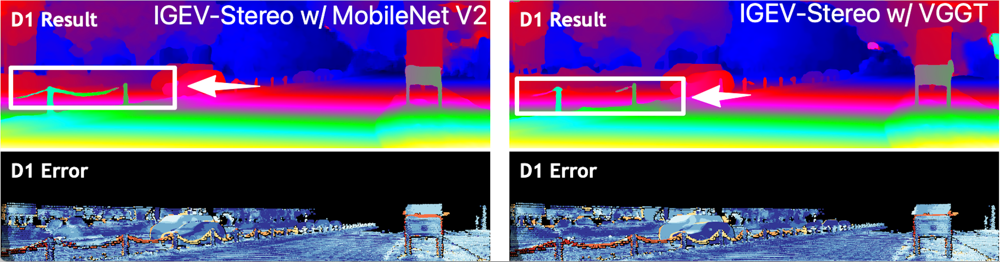

StereoVGGT: A Training-Free Visual Geometry Transformer for Stereo Vision
Abstract
Driven by the advancement of 3D devices, stereo vision tasks including stereo matching and stereo conversion have emerged as a critical research frontier. Contemporary stereo vision backbones typically rely on either monocular depth estimation (MDE) models or visual foundation models (VFMs). Crucially, these models are predominantly pretrained without explicit supervision of camera poses. Given that such geometric knowledge is indispensable for stereo vision, the absence of explicit spatial constraints constitutes a significant performance bottleneck for existing architectures. Recognizing that the Visual Geometry Grounded Transformer (VGGT) operates as a foundation model pretrained on extensive 3D priors, including camera poses, we investigate its potential as a robust backbone for stereo vision tasks. Nevertheless, empirical results indicate that its direct application to stereo vision yields suboptimal performance. We observe that VGGT suffers from a more significant degradation of geometric details during feature extraction. Such characteristics conflict with the requirements of binocular stereo vision, thereby constraining its efficacy for relative tasks. To bridge this gap, we propose StereoVGGT, a feature backbone specifically tailored for stereo vision. By leveraging the frozen VGGT and introducing a training-free feature adjustment pipeline, we mitigate geometric degradation and harness the latent camera calibration knowledge embedded within the model. StereoVGGT-based stereo matching network achieved the \(1^{st}\) rank among all published methods on the KITTI benchmark, validating that StereoVGGT serves as a highly effective backbone for stereo vision.
Motivation
Incorporating camera pose knowledge is crucial for stereo vision. This is because camera poses inherently encapsulate the camera focal length \(f\). According to the formulation \(d = \frac{f \cdot B}{z}\), the focal length \(f\) acts as a decisive determinant of the disparity \(d\). However, existing stereo vision backbones (i.e., VFMs and MDE models) are typically not trained with explicit camera pose data. The evaluation of the below histograms reveals that both leading methods—DINOv2 (a SOTA VFM) and DAv2 (a SOTA MDE model)—exhibit substantial errors in camera pose estimation.

We argue that the absence of camera pose knowledge prevents existing stereo vision backbones from providing sufficient geometric priors, thereby creating a performance bottleneck for downstream tasks.
Directly employing VGGT as a stereo vision backbone is non-trivial. While 3D foundation models like VGGT encodes rich camera geometry, simply using it as a backbone for stereo matching does not lead to substantial gains. This motivates another key research question: what underlying factors cause this performance gap?

We observe that VGGT tends to excessively degrade the structural contours within the feature maps. For example, as shown in the below figure, features from original DINOv2 maintain clear geometric contours of the vehicle. In contrast, features from the DINO component of VGGT suffer from structural blurring, where the vehicle become nearly indistinguishable from the ground. This is attributed to VGGT's original design for multi-view reconstruction, where its inherent feature degradation characteristics were intended to mitigate cumulative errors.

Unlike semantic-centric tasks that prioritize high-level abstraction, stereo vision relies heavily on the preservation of local structural integrity. The reduction in SSIM observed within VGGT reflects a severe structural degradation in the feature space. This phenomenon ultimately hampers the utility of VGGT as an effective backbone for stereo vision tasks.
To harness the latent camera-specific knowledge embedded within VGGT while bypassing its inherent degradation, we propose StereoVGGT.

StereoVGGT can serves as a highly effective backbone for stereo vision: StereoVGGT-based stereo matching network ranks \(1^{st}\) among all published methods on the KITTI benchmark for non-occluded pixels. StereoVGGT-based stereo conversion network achieves SOTA performance on the Mono2Stereo and Inria 3D Movie datasets.
StereoVGGT can be used as ...
A Robust Stereo Geometry Extractor!

A Feature Backbone for Stereo Matching!

A Disparity Backbone for Stereo Conversion!

Perception in the wild
BibTeX
@article{,
title={StereoVGGT},
author={},
journal={},
year={2025},
url={}
}